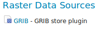
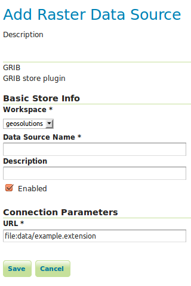

GRIB¶
Adding a GRIB data store¶
To add a GRIB data store the user must go to Stores –> Add New Store –> GRIB.

GRIB in the list of raster data stores¶
Configuring a GRIB data store¶

Configuring a GRIB data store¶
Option |
Description |
|
|
|
|
|
|
|
|
|
Relationship with NetCDF¶
Note
Note that internally the GRIB extension uses the NetCDF reader, which supports also GRIB data. See also the NetCDF documentation page for further information.
Current limitations¶
Input coverages/slices should share the same bounding box (lon/lat coordinates are the same for the whole ND cube)
Previous: Using the GeoPackage Output Extension
Next: Imagemap